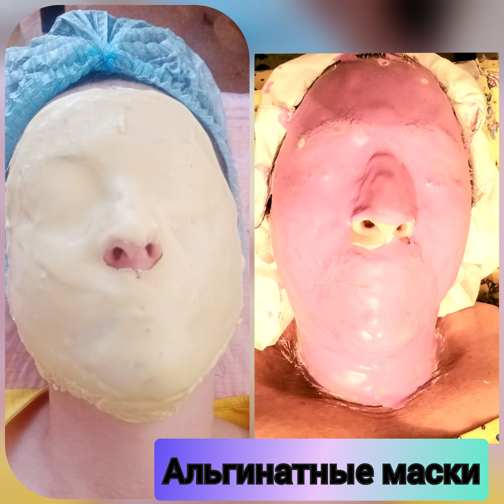

Что такое альгинатная маска?
Альгинатная маска для лица — это средство для восстановления уставшей и тусклой кожи. При нанесении на кожу такая маска пластифицируется, оказывая дренажный и лифтинговый эффект.
Альгинатная маска возвращает коже тонус и сияние.
Для чего нужна альгинатная маска? С ее помощью можно достаточно быстро:
повысить тонус кожи;
сузить поры;
устранить следы усталости.

Целлюлит и обёртывание
Целлюлит – это знакомое многим состояние кожи бедер, ягодиц и рук, когда кожа становится неровной, на ней виднеются бугорки и впадины, поэтому целлюлит называют «эффектом апельсиновой корки». Целлюлит – это структурные изменения в подкожно-жировом слое, ведущие к нарушению микроциркуляции и лимфатического оттока.
Основные методы избавления от данной проблемы — это питание и специальный массаж и обёртывание